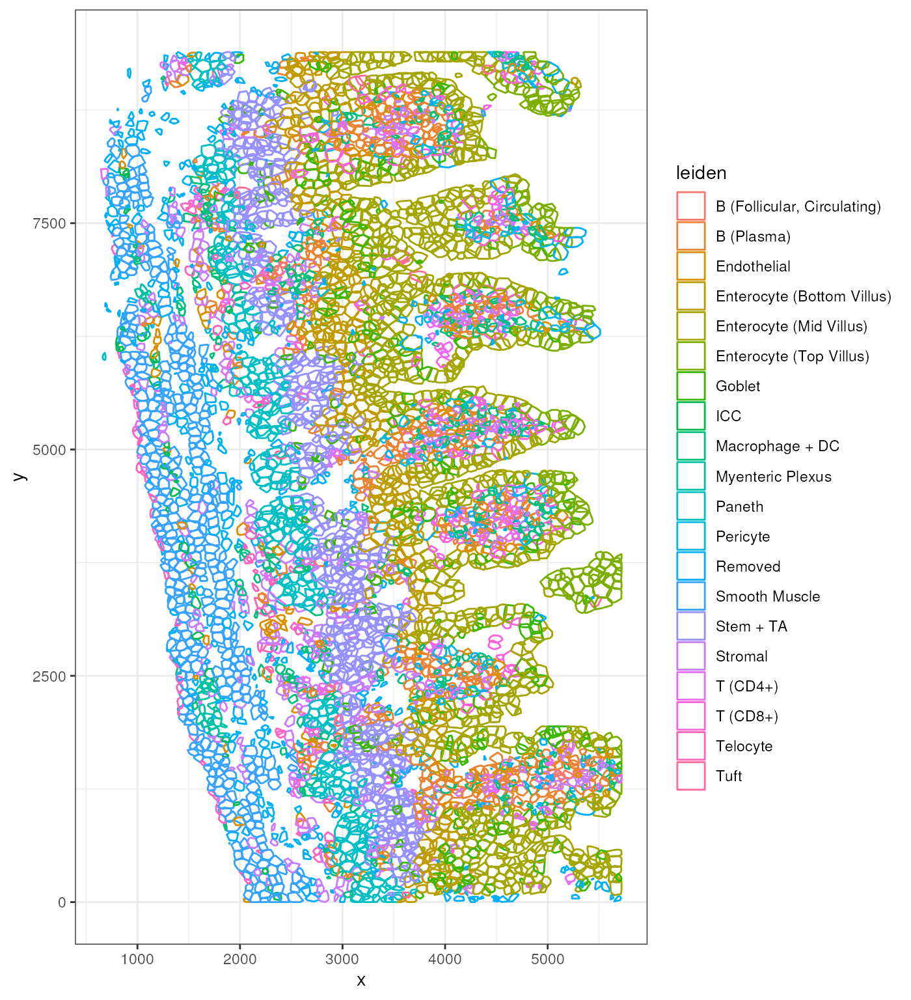

segmentation.Rmd
eh <- ExperimentHub()## snapshotDate(): 2022-10-24## ExperimentHub with 9 records
## # snapshotDate(): 2022-10-24
## # $dataprovider: Boston Children's Hospital
## # $species: Mus musculus
## # $rdataclass: data.frame, matrix, EBImage
## # additional mcols(): taxonomyid, genome, description,
## # coordinate_1_based, maintainer, rdatadateadded, preparerclass, tags,
## # rdatapath, sourceurl, sourcetype
## # retrieve records with, e.g., 'object[["EH7543"]]'
##
## title
## EH7543 | Petukhov2021_ileum_molecules
## EH7544 | Petukhov2021_ileum_dapi
## EH7545 | Petukhov2021_ileum_membrane
## EH7547 | Petukhov2021_ileum_baysor_segmentation
## EH7548 | Petukhov2021_ileum_baysor_counts
## EH7549 | Petukhov2021_ileum_baysor_coldata
## EH7550 | Petukhov2021_ileum_baysor_polygons
## EH7551 | Petukhov2021_ileum_cellpose_counts
## EH7552 | Petukhov2021_ileum_cellpose_coldata
spe <- MerfishData::MouseIleumPetukhov2021(segmentation = "baysor",
use.images = FALSE)
spe## class: SpatialExperiment
## dim: 241 5800
## metadata(1): polygons
## assays(2): counts molecules
## rownames(241): Acsl1 Acta2 ... Vcan Vim
## rowData names(0):
## colnames: NULL
## colData names(7): n_transcripts density ... leiden_final sample_id
## reducedDimNames(0):
## mainExpName: NULL
## altExpNames(0):
## spatialCoords names(2) : x y
## imgData names(0):Here, we inspect the polygon segmentation borders obtained from the Baysor segmentation:
poly <- metadata(spe)$polygons
head(poly)## z cell x y
## [1,] 1 1 2053 51
## [2,] 1 1 2053 54
## [3,] 1 1 2053 57
## [4,] 1 1 2056 57
## [5,] 1 1 2059 57
## [6,] 1 1 2059 54We first check how many cells / polygons do we have for each z-layer:
## 1 2 3 4 5 6 7 8 9
## 3866 4095 4351 4512 4426 4085 3467 2806 2253That means we have 3866 cells in the first z-plane.
Question: how to relate the polygons to the 5,800 cells that we have in the segmentation counts matrix?
Answer: we can use functionality from the sp package for assigning cell centroids to polygons they are spatially contained in.
This can be done using either the point.in.polygon
function. For example, we identify here cell centroid coordinates that
overlap with the first polygon of the first z-plane:
poly1 <- poly[poly[,"cell"] == 1 & poly[,"z"] == 1, c("x", "y")]
res <- sp::point.in.polygon(spatialCoords(spe)[,"x"],
spatialCoords(spe)[,"y"],
poly1[,"x"],
poly1[,"y"])
head(res)## [1] 1 0 0 0 0 0
table(res)## res
## 0 1
## 5799 1This means that the first cell in the assay corresponds to the first polygon in the first z-layer.
Or we can use the over function, which allows to more
easily iterate over multiple polygons. For example, we identify here
cell centroid coordinates that overlap with the first two polygons of
the first z-plane:
pts <- sp::SpatialPoints(spatialCoords(spe))
p1 <- sp::Polygon(poly1[,c("x", "y")])
poly2 <- poly[poly[,"cell"] == 2 & poly[,"z"] == 1, c("x", "y")]
p2 <- sp::Polygon(poly2[,c("x", "y")])
pol <- sp::SpatialPolygons(list(sp::Polygons(list(p1), ID = "1"),
sp::Polygons(list(p2), ID = "2")))## 1 2 3 4 5 6
## 1 2 NA NA NA NA
table(res)## res
## 1 2
## 1 1## $`1`
## [1] 1
##
## $`2`
## [1] 2
##
## $`3`
## integer(0)
##
## $`4`
## integer(0)
##
## $`5`
## integer(0)
##
## $`6`
## integer(0)This means that the first two cell in the assay corresponds to the first two polygons in the first z-layer.
Ok, so now let’s do this for all cell centroids of the Baysor segmentation to find the associated polygons:
zspl <- split(data.frame(poly[,c("cell", "x", "y")]), poly[,"z"])
cellspl <- lapply(zspl, function(s) split(s[,c("x", "y")], s[,"cell"]))
spl <- do.call(c, cellspl)We define a little helper function for creating polygon objects:
.createPolygon <- function(i)
{
p <- sp::Polygon(spl[[i]])
p <- sp::Polygons(list(p), ID = as.character(i))
return(p)
}
pz <- lapply(seq_along(spl), .createPolygon)
pz <- sp::SpatialPolygons(pz)
res <- sp::over(pts, pz)
head(res)## 1 2 3 4 5 6
## 25337 25336 28803 21255 25339 25340## $`1`
## [1] 1 3867 7962 12313 16825 21251 25337
##
## $`2`
## [1] 2 3868 7963 12314 16826 21252 25336
##
## $`3`
## [1] 4 3869 7964 12315 16827 21254 25337 28803
##
## $`4`
## [1] 5 3870 7965 12316 16829 21255
##
## $`5`
## [1] 6 3871 7966 12317 16830 21256 25339
##
## $`6`
## [1] 7 3872 7967 12319 16831 21258 25340##
## 0 1 2 3 4 5 6 7 8 9 10 11
## 8 22 46 114 224 335 623 858 1284 2277 6 3That means that we have 8 cells in the segmentation matrix without overlapping polygons, and, on the other hand, 3 cells with up to 11 overlapping polygons.
As there is thus indeed no 1:1 mapping, and given that the Baysor segmentation results are 2D, we could eg. just take the first polygon for each cell, irrespective of the z-layer:
## 1 2 3 4 5 6
## 1 2 4 5 6 7Alternatively, we can compute and visualize simple convex hulls instead:
x <- BumpyMatrix::unsplitAsDataFrame(assay(spe, "molecules"))
x$column <- as.integer(x$column)
x## DataFrame with 797493 rows and 5 columns
## row column x y z
## <character> <integer> <numeric> <numeric> <numeric>
## 1 Adgrf5 1 2090 15 0.0000
## 2 Adrb1 1 2091 20 13.7682
## 3 Cadm1 1 2063 6 41.3046
## 4 Cadm1 1 2063 29 68.8410
## 5 Cd14 1 2067 36 13.7682
## ... ... ... ... ... ...
## 797489 Itgae 5799 4764 9308 13.7682
## 797490 Clca3b 5800 5226 8766 0.0000
## 797491 Cps1 5800 5228 8797 0.0000
## 797492 Cps1 5800 5229 8784 0.0000
## 797493 Cps1 5800 5222 8787 13.7682Using base::chull, this computes convex hulls for 5,800
cells and around 820k molecules in less than a second:
cl <- split(data.frame(x[,c("x", "y")]), x$column)
length(cl[[1]])## [1] 2
system.time( clh <- lapply(cl, chull) )## user system elapsed
## 1.457 0.004 1.461
clh[[1]]## [1] 18 34 17 26 20 29 28 19 8 31 5
length(clh[[1]])## [1] 11
length(clh)## [1] 5800Create data frame for plotting:
cl.sub <- cl
for(i in seq_along(clh)) cl.sub[[i]] <- cl.sub[[i]][clh[[i]],]
clc <- do.call(rbind, cl.sub)
clc$cell <- rep(names(cl.sub), lengths(clh))
clc$leiden <- spe$leiden_final[as.integer(clc$cell)]
p <- ggplot() + geom_polygon(data = clc,
aes(x = x, y = y, group = cell, color = leiden),
fill = NA)
p + theme_bw()